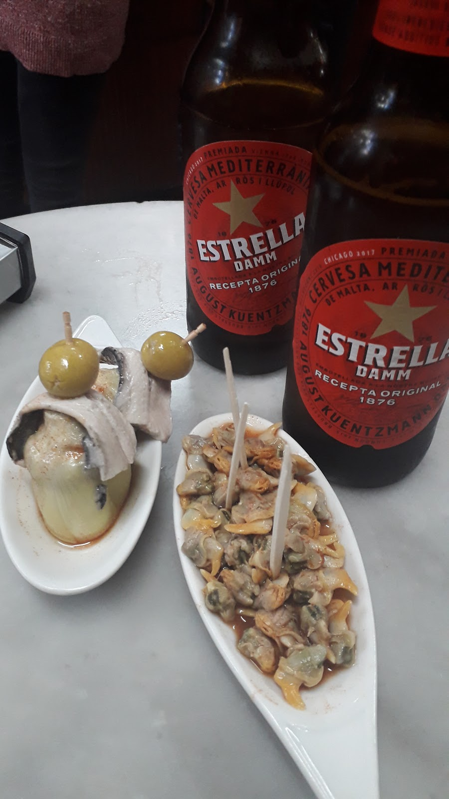
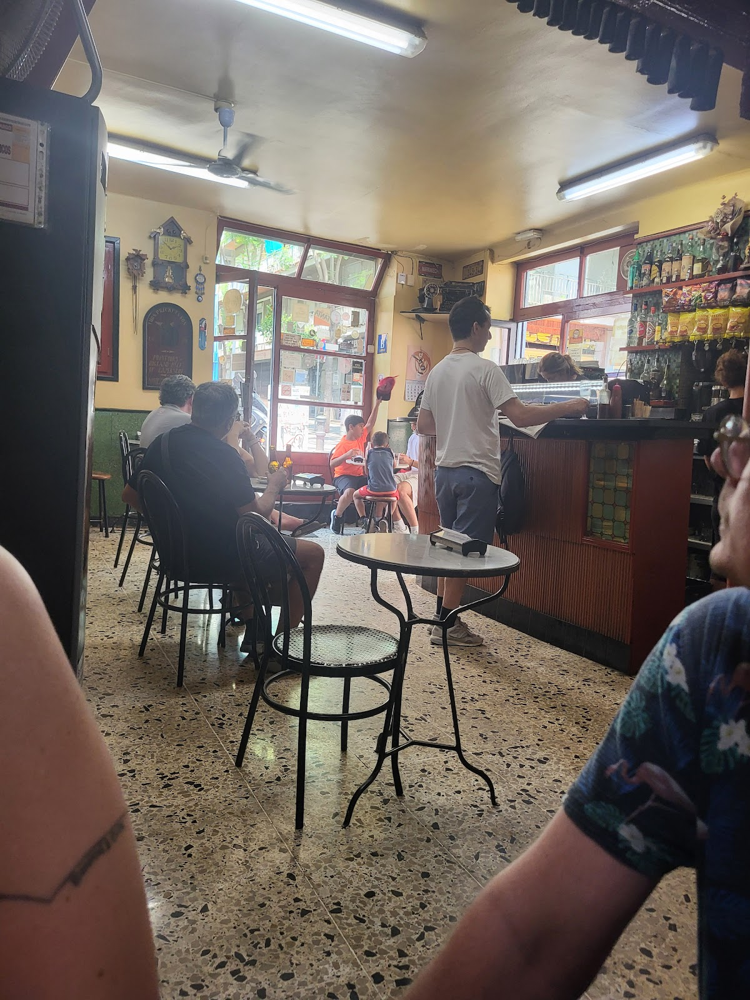
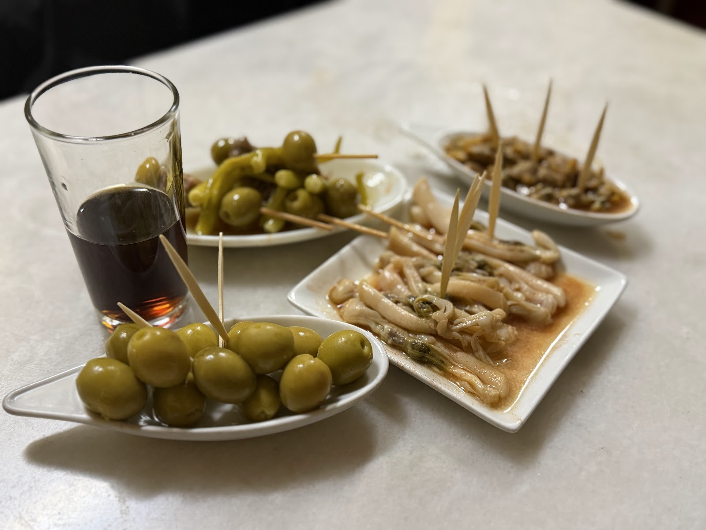
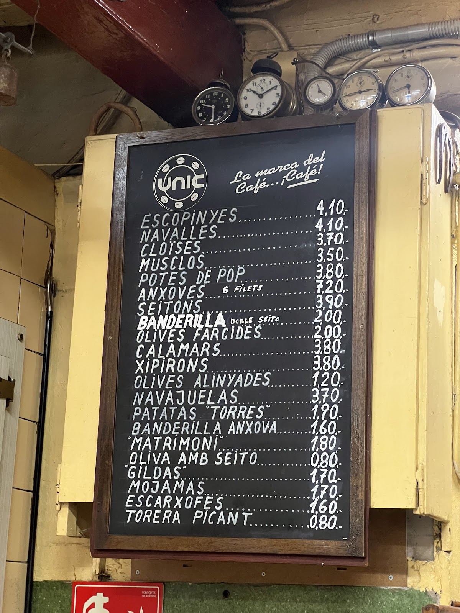
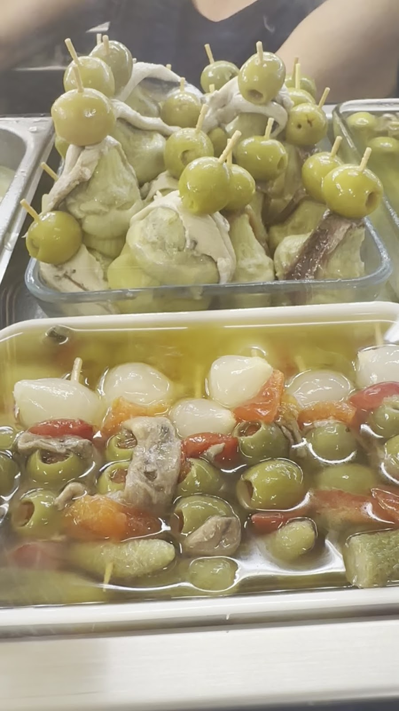

Un tros de Barcelona de sempreA piece of the old Barcelona
Petita, sempre plena, de peu a la barra i vessant al carrer. El vermut és de grifo i les tapes de qualitat. Vine a fer el vermut de tota la vida.Small, always busy, standing room only, spilling onto the street. Vermouth straight from the tap and quality tapas. Come for the vermut ritual of always.





